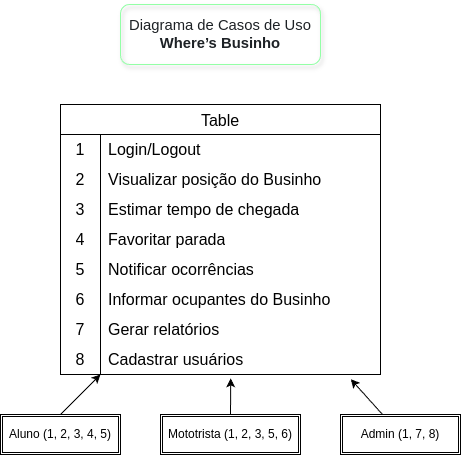
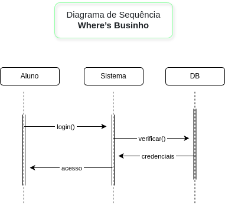

Disciplinas
ANÁLISE E PROJETO DE SOFTWARE ORIENTADO A OBJETOS. Concluído
Materiais
No módulo 4, exploramos a prática da análise e projeto, incluindo ferramentas e propostas de projeto, bem como a implementação orientada a objetos. Agora, é hora de aplicar esses conhecimentos na modelagem de um sistema completo e de uma funcionalidade específica.
Contextualização da Atividade:
- Esta atividade consiste em modelar um sistema utilizando diagramas UML. Para auxiliar, sugerimos quatro propostas de sistemas que podem servir de base, mas você tem a liberdade de escolher outro sistema, desde que apresente um documento de requisitos correspondente:
- Sistema de Gestão de Estacionamentos Estacionamentos - Requisitos.pdf
- Sistema da Padaria dos Sonhos Padaria dos SOnhOs - Requisitos.pdf
- Sistema Where’s Businho? Where’s Businho - Requisitos.pdf
- Sistema de Agenda Acadêmica Agenda-Acadêmica-Requisitos.pdf
- Os documentos de requisitos para os sistemas sugeridos estão anexados a esta atividade. Caso escolha um sistema diferente, você deve fornecer um documento de requisitos detalhado como base.
- Você deve entregar a modelagem completa do sistema e de uma funcionalidade específica, incluindo:
- Diagrama de Casos de Uso do sistema completo;
- Diagrama de Classes do sistema completo;
- Diagrama de Sequência ou Colaboração de uma funcionalidade específica.
Conteúdo
Passos para realização da atividade:
- Escolha da Funcionalidade:
- Selecione uma funcionalidade de um dos sistemas sugeridos ou de outro sistema de sua preferência. Se escolher um sistema diferente, inclua o documento de requisitos.
- Modelagem do Sistema:
- Crie um Diagrama de Casos de Uso representando o sistema completo.
- Desenvolva um Diagrama de Classes representando todas as entidades e relacionamentos do sistema.
- Modelagem da Funcionalidade:
- Elabore um Diagrama de Sequência ou Colaboração para detalhar a interação entre os objetos durante a execução da funcionalidade específica.
- Alinhamento e Consistência:
- Assegure que todos os diagramas estejam alinhados e sejam consistentes entre si, refletindo corretamente os requisitos do sistema e da funcionalidade.
- Empacotamento dos Arquivos:
- Após concluir a modelagem, exporte-os em PDF ou Imagem:
- Diagrama de Casos de Uso do sistema completo;
- Diagrama de Classes do sistema completo;
- Diagrama de Sequência ou Colaboração de uma funcionalidade específica;
- empacote-os em um arquivo ZIP para envio.
Resolução
Funcionalidade: Login de Usuários.- Verificação de credenciais (aluno, motorista ou admin).
- Autenticação de usuário.
- Acesso direcionado dependendo da categoria do usuário.
- Validação e Evolução do Modelo Conceitual: Revise o diagrama criado, garantindo que ele ofereça uma visão clara e precisa do sistema proposto. Certifique-se de que o modelo evolui adequadamente a partir do modelo conceitual desenvolvido anteriormente.
- Diagrama de Casos de Uso:
- Diagrama de Classes:

- Diagrama de Sequência (login de usuário):
